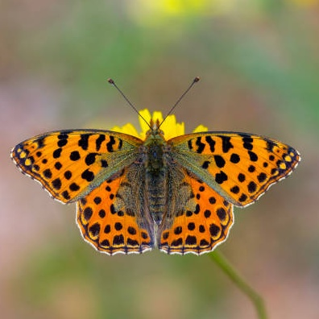
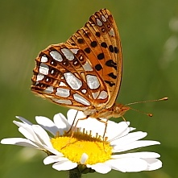

Dorsal view

Side view
Issoria lathonia
- Common name
- Queen of Spain Fritillary
- Deutscher Name
- Kleiner Perlmuttfalter
- Family
- Nymphalidae
- Family common name
- Brush-footed Butterflies
- On the wing
- April to L October.
Three generations.
- Habitat
- Open land. Arable areas on limestone or sand. Up to 2500m, but is probably indigenous only to the Southern Alps.
- Larval host:
- Viola arvensis is the usual host plant in arable fields, whereas it is often Viola hirta in grassland areas.
Range Map
Seasonality